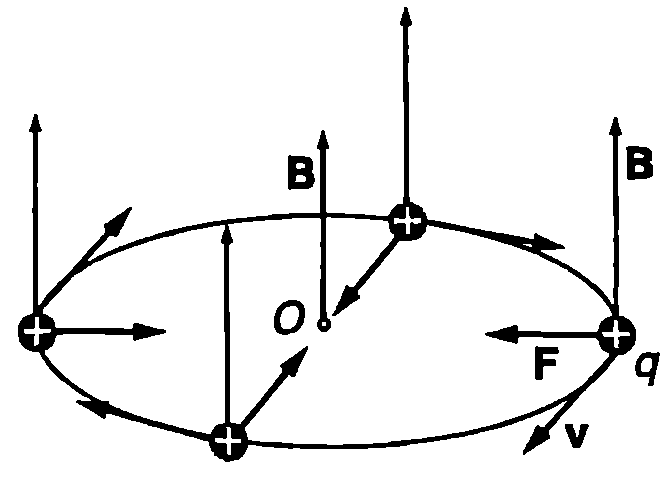
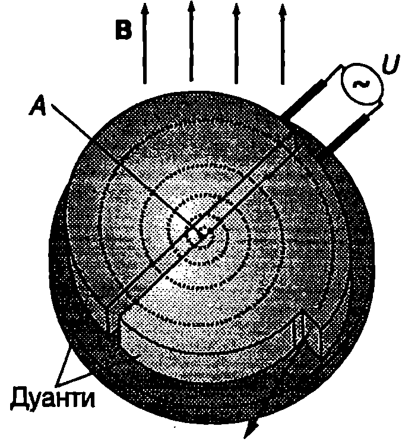
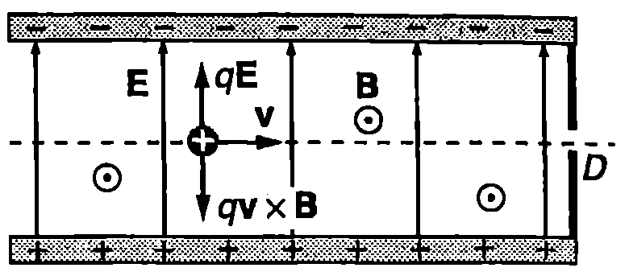
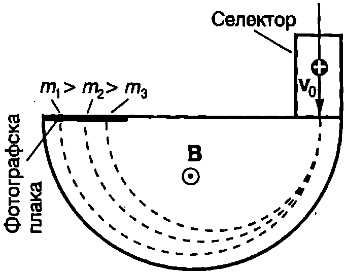
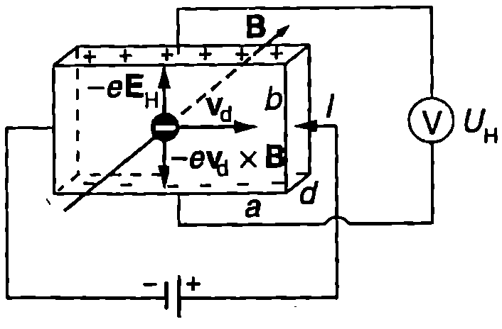

Ще разгледаме характерните особености на движението на заредени частици в еднородно магнитно поле и ще опишем принципа на действие на устройства с важно практическо значение, в които се използва това движение.
Лоренцова сила
В редица случаи снопове от частици със заряд се движат със скорост в област от пространството, в която има едновременно електрично поле с интензитет и магнитно поле с индукция . Тогава на всяка частица от снопа действа както електрична сила , така и магнитна сила .
Резултантната сила
действаща на частицата, се нарича лоренцова сила, в чест на холандския физик Хендрик Лоренц (1853-1928).
Движение по кръгова орбита
Както е известно от механиката, равномерното движение по окръжност се извършва под действие на центростремителна сила, която е постоянна по големина и винаги е насочена към центъра на окръжността. Такава сила действа на частица със заряда и маса , чиято скорост е перпендикулярна на вектора на магнитната индукция на еднородно магнитно поле. Тъй като магнитната сила винаги е насочена перпендикулярно на скоростта на частицата, тя не извършва работа. Затова големината на скоростта и кинетичната енергия на частицата не се изменят. Не се изменя и големината на магнитната сила . Силата променя само посоката на скоростта: частицата описва окръжност (Фиг. \ref{fig:63.1}). Заместваме центростремителната сила и центростремителното ускорение на частицата в уравнението на втория принцип на механиката :

`Фиг. 63.1`
откъдето изразяваме радиуса на окръжността
Периодът на въртене (времето за едно завъртане) е равен на
Честотата на въртене е
Следователно кръговото движение на заредена частица в еднородно магнитно поле се характеризира с една много важна особеност, която има голямо практическо значение: периодът и честотата на въртене не зависят от скоростта (кинетичната енергия) на частицата, а се определят единствено от индукцията на магнитното поле и отношението на заряда към масата на частицата, наречено специфичен заряд на частицата. Честотата се нарича циклотронна честота, тъй като с такава честота се въртят по окръжност заредените частици в циклотроните ускорители на заредени частици.
Циклотрон

Циклотрон.
`Фиг. 63.2`
Използва се за ускоряване на протони и йони. Принципът на действие на циклотрона се илюстрира от Фиг. \ref{fig:63.2}. Два кухи полуцилиндрични електрода (дуанти) са разположени на малко разстояние един от друг във вакуумна камера. Камерата е поставена между полюсите на голям електромагнит, който създава постоянно и еднородно магнитно поле, насочено перпендикулярно на равнината на дуантите. Към дуантите е приложено напрежение и в процепа се създава електрично поле, което ускорява йоните. Те се инжектират с пренебрежимо малка начална скорост в точка в средата на процепа. Всеки йон, попаднал между дуантите, се ускорява от електричното поле и навлиза вътре в единия дуант, където електричното поле е нула. Там под действие на магнитното поле, чиято индукция е перпендикулярна на скоростта на йона, той описва полуокръжност и след време ( — период на въртене) отново попада в процепа. За да се извърши отново ускоряване, а не забавяне на йона, трябва за времето , през което той се е движил вътре в дуанта, електричното поле да е променило посоката си на противоположната. Тогава при второто си преминаване през процепа йонът отново увеличава кинетичната си енергия и във втория дуант описва полуокръжност с по-голям радиус. Цикълът многократно се повтаря йонът се движи по разширяваща се спирала, като при всяко преминаване през електричното поле увеличава кинетичната си енергия. На Фиг. \ref{fig:63.2} с пунктир е показана спиралата, описана от положителен йон (или от протон). В периферната част на камерата през специално прозорче, затворено с тънко метално фолио, йоните се извеждат извън ускорителя.
Принципно важно за работата на циклотрона е условието честотата , с която се изменят напрежението и електричното поле между дуантите, да е равна на циклотронната честота на въртене на йоните (или протоните) в магнитното поле на ускорителя:
Тъй като циклотронната честота не за виси от скоростта (кинетичната енергия) на ускоряваните частици, циклотроните работят при постоянна честота на ускоряващото напрежение.
Протонен синхротрон
Циклотронът не може да се използва за ускоряване на заредени частици до скорости, близки до скоростта на светлината, тъй като тогава се проявяват релативистки ефекти: масата на частиците постепенно нараства, поради което тяхната циклотронна честота започва да намалява. Съществува още един проблем: за достигане на много големи енергии е необходим циклотрон с огромни размери. Например, за да се получат протони с енергия 500 GeV, трябва да се използва огромен магнит, чиито полюси имат площ няколко квадратни километра! Тези два проблема се решават в съвременните ускорители на протони, наречени протонни синхротрони, като едновременно се променят както честотата на ускоряващото напрежение, така и големината на индукцията на магнитното поле. Тези изменения стават синхронизирано по такъв начин, че протоните, вместо по спирала, да се движат по окръжност с постоянен радиус. Това дава възможност силно магнитно поле да се създава с помощта на свръхпроводящи магнити само в тясна ивица около орбитата на протоните. Например ускоряващият кръг на протонния синхротрон в ЦЕРН (Европейска лаборатория по физика на елементарните частици) в Женева има дължина 7 km. На него се ускоряват протони до енергия 500 GeV ( eV).
Пример 63.1
В циклотрон се ускоряват протони. Магнитното поле е с индукция T. Преди да напуснат ускорителя протоните се движат по орбита с максимален радиус m. Определете: а) максималната кинетична енергия на протоните; б) броя на обиколките; в) времето за ускоряване. При всяко преминаване през процепа между дуантите кинетичната енергия на протона нараства с keV. \end{psexample}
Решение
а) Връзката между радиуса на орбитата и скоростта на протона се изразява с уравнение \eqref{eq:63.2}: . Кинетичната енергия на протона е . Изразяваме скоростта от първото уравнение и я заместваме във второто. Получаваме Кинетичната енергия е максимална, когато протонът се движи по орбита с максимален радиус, т.е. при . Тогава
- За един оборот протонът два пъти преминава през ускоряващото електрично поле между дуантите и получава кинетична енергия . Броят на оборотите е
в) Периодът на въртене е
Периодът не зависи от енергията на протоните и остава постоянен по време на ускоряването. Следователно времето за ускоряване е .
**Селектор на скорости **
В редица случаи при физичните изследвания и в технологиите е необходимо използването на снопове от заредени частици, които се движат с точно определена скорост . Формирането на такива снопове се постига с устройства, наречени селектори на скорости. В селектора частици със заряд а преминават през област от пространството, в която едновременно са създадени еднородно електрично поле и еднородно магнитно поле. Векторите и са взаимноперпендикулярни и са насочени така, че електричната сила и магнитната сила да отклоняват частиците в противоположни посоки. Принципът на действие на селектора на скорости се илюстрира от Фиг. \ref{fig:63.3}. Зареден плосък кондензатор е поставен в еднородно магнитно поле. Магнитната индукция е насочена към нас, перпендикулярно на равнината на чертежа, а частиците се движат по оста на кондензатора. Посоките на двете сили, действащи на всяка от заредените частици, са показани на фигурата. През тесния процеп на изхода на селектора ще преминат само онези частици, които през цялото време се движат праволинейно и равномерно по оста. Това са частиците, за които лоренцовата сила е нула:

Селектор на скорости. Знакът $\odot$ показва, че магнитната индукция $\vec B$ е насочена към нас, перпендикулярно на равнината на чертежа.
`Фиг. 63.3`
откъдето следва, че . Следователно през селектора ще преминат само частиците със скорост
За частиците със скорост електричната сила е по-голяма от магнитната сила и те се отклоняват към отрицателния електрод на кондензатора. Обратно, частиците със скорост са подложени на действието на по-голяма магнитна сила и се отклоняват в противоположната посока.
Масспектрометър

Масспектрометър.
`Фиг. 63.4`
Друго важно приложение на магнитното поле е в масспектрометрите, с които се определя масата на различни йони. Те се използват за извършване на химичен анализ и контрол при технологичните процеси, при получаването на нови материали и др. Принципът на действие на един вид масспектрометър се илюстрира от Фиг. \ref{fig:63.4}. Успореден сноп, съдържащ йони с различни маси и скорости, преминава през селектор на скорости, който пропуска само йоните с определена скорост . Тези йони навлизат във вакуумна камера, поставена в еднородно магнитно поле. Магнитната индукция е перпендикулярна на скоростта . (Векторът е насочен към нас, перпендикулярно на равнината на чертежа.) Под действието на магнитната сила йоните описват полуокръжности с радиус и попадат върху фотографска плака. Да предположим, че всички йони имат еднакъв заряд . Тъй като скоростите им също са равни, йоните ще опишат полуокръжности, чиито радиуси са правопропорционални на тяхната маса: , където е константа, еднаква за всички йони от снопа. Следователно йоните с различни маси ще попаднат на различни места върху плаката. Така по разположението на линиите, които се получават след проявяването на фотографската плака, може да се определи масата на различни те йони от снопа.
Ефект на Хол
През 1879 г. американският физик Едвин Хол (1855-1938) поставя образец от злато в магнитно поле и установява, че при протичане на ток през образеца между противоположните му странични стени възниква електрично напрежение. Това явление, което е свързано с действието на магнитната сила върху движещи се електрични заряди, е наречено ефект на Хол. Днес ефектът на Хол се прилага широко за изследване свойствата на полупроводници те и на металите. Чрез него се извършва контрол на качеството на полупроводниковите материали, предназначени за производство на прибори. Ефектът на Хол се използва също за измерване индукцията на магнитни полета.

Ефект на Хол.
`Фиг. 63.5`
На Фиг. \ref{fig:63.5} е показана схема на опитна постановка за наблюдаване ефекта на Хол. Полупроводников кристал, например с -тип проводимост, е поставен в еднородно магнитно поле (между полюсите на постоянен магнит). Образецът има форма на правоъгълен паралепипед с дължини на ръбовете , и . При протичане на постоянен ток през образеца дрейфовата скорост на свободните електрони е насочена перпендикулярно на магнитната индукция . Под действие на магнитната сила електроните се отклоняват надолу и долната стена на кристала се зарежда отрицателно. Върху горната стена остава некомпенсиран положителен заряд. Така между двете срещуположни стени на образеца възниква електрично напрежение, наречено холово напрежение , което се измерва с волтметър. Опитът показва, че холовото напрежение е правопропорционално на тока и на индукцията на магнитното поле и е обратнопропорционално на дебелината на образеца ( е дължината на ръба, който е успореден на магнитното поле):
Коефициентът на пропорционалност характеризира свойствата на материала, от който е изготвен образецът, и се нарича коефициент на Хол.
За да определим коефициента на Хол, ще отчетем, че некомпенсираните електрични заряди създават в образеца електрично поле, подобно на полето на зареден кондензатор. Неговият интензитет е . На токовите носители действа електрична сила с големина е , чиято посока е противоположна на посоката на магнитната сила (Фиг. \ref{fig:63.5}). Големината на магнитната сила е . Натрупването на заряди се прекратява, когато двете сили се уравновесят:
Токът през напречното сечение на образеца е (вж. уравнение \eqref{eq:52.2} на стр.43)
От уравнение \eqref{eq:63.8} изразяваме дрейфовата скорости, заместваме я в уравнение \eqref{eq:63.7} и определяме холовото напрежение
Приравняваме десните страни на уравнения \eqref{eq:63.9} и \eqref{eq:63.6} и изразяваме коефициента на Хол
Следователно коефициентът на Хол е обратнопропорционален на концентрацията и на свободните токови носители.
Пример 63.2
При изследване на ефекта на Хол за германиев кристал с -тип проводимост е измерено холово напрежение . Токът през образеца е , а индукцията на магнитното поле е . Дебелината на образеца (Фиг. \ref{fig:63.5}) . Определете коефициента на Хол и концентрацията на свободните електрони. \end{psexample}
Решение
Коефициентът на Хол се определя от уравнение \eqref{eq:63.6}: Концентрацията на свободните електрони е:
Задачи.
-
Заредена частица, която първоначално е в покой, се ускорява от напрежение след което навлиза в еднородно магнитно поле с индукция . Скоростта на частицата е насочена перпендикулярно на магнитната индукция . Определете специфичния заряд на частицата, ако в полето тя започва да се движи по окръжност с радиус .
-
Протони се ускоряват в циклотрон до максимална кинетична енергия . Каква максимална кинетична енергия могат да получат в този ускорител йони със заряд пъти по-голям от заряда на протона и с пъти по-голяма маса?
-
Какъв трябва да е радиусът на циклотрон, предназначен за ускоряване на протони до кинетична енергия при циклотронна честота ?
-
В масспектрометър попадат еднозарядни йони, ускорени от напрежение . Йоните се движат перпендикулярно на еднородно магнитно поле с индукция и описват полуокръжност с радиус . Определете масата на йоните.
-
Частица със заряд и маса преминава през точка от еднородно магнитно поле със скорост , която е насочена под ъгъл спрямо индукционните линии на полето. При какви стойности на магнитната индукция на полето частицата ще премине през точка , разположена на разстояние от точка ? Точките и лежат на една и съща индукционна линия.
Указание. Разложете скоростта на две компоненти: едната успоредна (), а другата перпендикулярна () на магнитната индукция . Частицата извършва сложно движение: под действие на магнитната сила се върти равномерно по окръжност със скорост и едновременно с това се движи с постоянна скорост . В резултат на тези две движения тя описва винтова линия, като при всяко пълно завъртане пресича линията . Частицата ще попадне в точка , ако времето за изминаването на разстоянието с постоянна скорост е равно на времето за (цяло число) пълни завъртания.